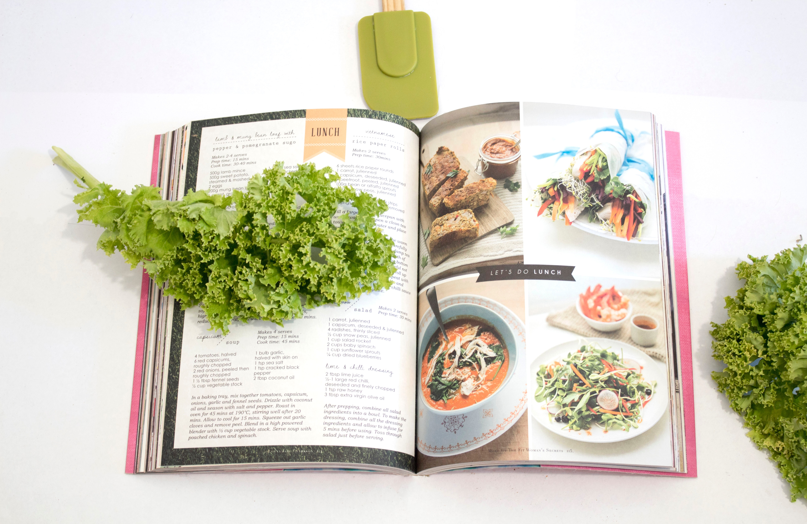

Welcome to our recipe website! Here, you'll find a wide variety of delicious and easy-to-follow recipes for every meal of the day. Whether you're a beginner cook or a seasoned pro, our step-by-step instructions and ingredient lists will help you create delicious meals in no time. We have something for everyone, from classic comfort food to healthy and nutritious options. So, grab your apron and let's get cooking!
